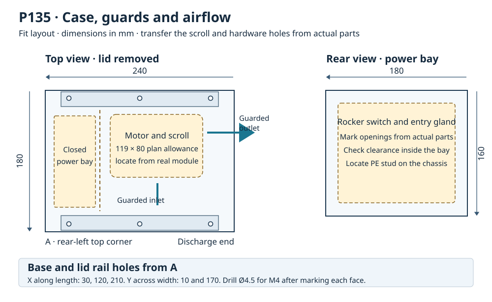
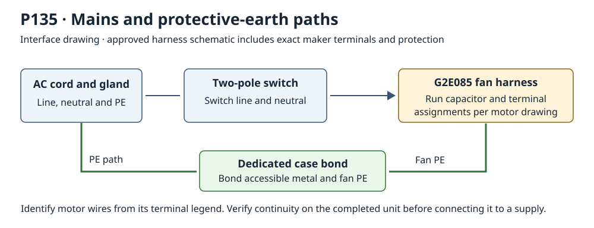

Build a 230 V corded workshop blower
Design a corded blower around a direct-mains motor module, fabricate its case and qualify the finished assembly.

Photo by Zakali Jia, scaled. Original photograph · CC BY-SA 4.0.

Watch. Identify the cord, grip, intake and nozzle on a commercial 230 V reference. Compare its construction with the fixed bench enclosure in this lesson. Bosch Professional India · GBL 620 corded blower.
Read the motor nameplate and define the job
Design for a 230 V AC, 50 Hz single-phase supply. A 250 V AC marking on a cord, switch or connector is its component rating. Read supply voltage and input current from the finished machine's nameplate. A commercial corded example is the Bosch GBL 620, rated 230 V and 620 W with a stated 3.5 m³/min air flow. That is about 210 m³/h at the manufacturer's stated condition. Use one test setup to compare installed airflow and nozzle pressure between builds. Bosch India · Corded blower data.
Make a fixed bench blower for moving clean air through a short duct. This build uses the ebm-papst G2E085-AA01-01 as a documented reference. Its motor, galvanised-steel impeller, ball bearings and cast-aluminium scroll arrive assembled. At 230 V and 50 Hz the published free-air point is 85 m³/h at 0 Pa, 2,350 rpm, 32 W and 0.15 A. The same curve gives 65 m³/h at 35 Pa, 50 m³/h at 60 Pa and 35 m³/h at 90 Pa. Start with an installed development target of at least 45 m³/h at 50 Pa with the case, guards and outlet adapter fitted. This is a target for bench testing. The finished assembly has no physical test results yet. ebm-papst · 50 Hz measured points · ebm-papst · Installation and maintenance.
For handheld or high-speed universal-motor designs, specify rotor balance, speed control, brush maintenance, vibration and mechanical protection as a separate product.
Buy the parts in India
Prices below are one-unit listing snapshots from 22 November 2026. Quote delivery, GST, the cord, terminal enclosure, sheet metal and fabrication separately. Obtain the actual motor, switch and cord before drilling their holes.
| Qty | Part | India source and bench check |
|---|---|---|
| 1 | ebm-papst G2E085-AA01-01 blower with matched run capacitor View blower | About ₹23,353 on the one-unit tier. Order code 2748474. Check that the supplier includes or specifies the compatible 1 µF, 400 VDB motor-run capacitor, its safety class and mounting method for the actual delivered revision. Get the fan connection diagram and mounting torque. element14 India · Exact module · RS · Module photo. |
| 1 | S1 Bulgin C1550ABAAD two-pole rocker View switch | About ₹469. DPST, maintained OFF/ON. The Bulgin 1550 series lists 16(4) A at 250 VAC. Confirm the exact switch approvals and load suitability. Supplier lists a 30.1 × 22.2 mm opening. Test the snap fit on an offcut of the same gauge before marking the rear plate. DigiKey India · Switch · Bulgin · Ratings and cutout options. |
| 1 + 1 | Earthed Indian cord set and matching gland View cord View gland | Quote a 2 m, 3 × 0.75 mm² flexible round cord with a factory moulded 6 A, 250 V, IS 1293 earthed plug and equipment-side tails. Ask for the conformity marking and jacket rating. Use the LAPP 53111010 M16 × 1.5 gland with its locknut if the cord OD is 4–10 mm and the anchorage passes the appliance tests. Gland about ₹336, locknut separate. Mona Industry · Indian cord set quote · Weidan · Cord reference photo · LionCircuits · Gland. |
| 1 set | Steel case, two guards, outlet adapter and gasket View guard stock View case drawing | Quote one 550 × 700 × 1.2 mm cold-rolled steel offcut, 1.4 m of 20 × 20 × 2 mm steel angle, 48 M4 case screws with locking hardware, a separate fan and guard fastener set, four rubber feet, closed-cell seal strip and 1 mm perforated stainless for both guards. Use 3 mm holes on 4.5 mm staggered centres as a cut-stock starting point. Keep fingers and tools clear of the impeller with the completed guard geometry. W09 · Ludhiana sheet-metal quote source · Stock photo · Tahini, CC BY 2.0. |
| 1 set | Terminal cover, line insulation and earth hardware View power map | Ask the electrical technician to specify an enclosed terminal block suited to the fan pigtails, four touch-protected 6.3 mm receptacles for the rocker, correctly sized ring terminals and protective-earth leads, and the cord and motor branch protection. One candidate for the 0.75 mm² switch harness is the fully insulated TE 2-520184-2 series-size receptacle. Confirm its tab fit, conductor range, insulation and crimp tool. Quote the whole harness after approval. TME India · Receptacle reference. |


The priced module, switch and gland total about ₹24,160. Get a parallel domestic quote before deciding whether the design is commercially viable. Give the supplier 230 V/50 Hz, the 45 m³/h at 50 Pa installed target, ambient and duty, acceptable outline and required fan curve. A local alternative needs its own dimensions and documented ratings. Rotech India · Centrifugal blower catalogue.
Cut the case and fit the air path
Use the 240 × 180 × 160 mm case as a trial layout. Check the maker's 117.5 × 117 × 80 mm envelope, supplied mounting pattern and outlet orientation against the actual fan. Retain the OEM balanced impeller and bearings. The case carries the fan through its intended mounting points and through a bracket or end plate as the mounting drawing allows. Keep the terminal bay separate from the guarded air path.
Set out a square, steel rule, scriber, centre punch, clamps, backing board, 3 mm pilot and 4.5 mm clearance bits, caliper, files and a deburring tool. Shear the blanks and use a sheet-metal nibbler or hole saw rated for 1.2 mm mild steel. A fabrication shop can cut the flange openings from a marked template. Set out a low-range differential manometer, anemometer and test duct for the air measurements. Bosch · Sheet-metal hole-saw training.


Tool photo sources. Caliper · Jacek Halicki, CC BY-SA 4.0 · Drill press · Plbcr, CC BY-SA 3.0 · Anemometer · TSI.


| Piece | Qty | Nominal size in mm | Fabrication |
|---|---|---|---|
| Base and lid | 1 each | 240 × 180 × 1.2 | Drill six case-rail clearance holes from datum A. Keep the lid tool-removable. |
| Long sides | 2 | 240 × 157.6 × 1.2 | Fit between base and lid. Use the actual inlet position to mark the intake panel, including the guard attachment points. |
| Rear and discharge end | 1 each | 177.6 × 157.6 × 1.2 nominal | File to slip fit. Transfer the end collar on the outlet end and the rocker and gland on the rear power panel. |
| Rails, posts and power bay | 1 set | 4 × 200 long and 4 × 125 long, 20 × 20 × 2 angle. Measure divider at trial fit. | Trim to clear guard, motor and fasteners. Close the power bay with an approved barrier and protected pass-through. Record actual dimensions after trial fit. |
| Intake and outlet guards | 1 each | 120 × 110 and 100 × 100 perforated working faces, plus solid fixing flanges | Form rigid tool-removable frames with adequate stand-off. At approximately 40% nominal open area these faces give about 5,300 and 4,000 mm² net before edge and fastener losses. Verify intake and outlet losses and access with the finished frames. |

- Mock up the airflow. Tape the real fan drawing into a cardboard box. Verify the module, gasket, both guard stand-offs and the adapter fit. Keep enough room for the terminals, motor cooling and inspection.
- Shear and drill. Mark both blanks from A, measure the two base diagonals and aim for no more than 1 mm difference. Drill the rails through the clamped base and lid. Deburr both faces and sweep off swarf before fitting the module.
- Fit the scroll and guards. Transfer the outline and hole centres from the actual flange. Fold or rivet the outlet collar and seal the perimeter. Fit guard frames before checking movement. Confirm fastener engagement and absence of rubbing with the unit isolated.
- Check the power-panel parts. Test switch and gland on scrap first. Inspect installed latches, cord jacket grip and barriers with the cord disconnected. Fit the gasket and remove parts where required before drilling or finishing.
Watch how the gland grips the cable. Identify the housing, locknut and sealing insert and locate the grip on the outer jacket. Confirm the exact torque and hole from the chosen fitting's instructions. LAPP · SKINTOP ST-M cable glands.
Have the mains harness fitted and checked
| Assembly | Workshop build and inspection |
|---|---|
| Case and airflow | Mark the motor footprint, inlet, outlet and baffles from the module drawing. Shear, drill and deburr the metal panels. Bolt the motor to its intended mounts and guard both openings. Keep the duct joint sealed and preserve motor cooling. |
| Mains entry | Fit the rated earthed cord set, gland, two-pole switch and protection from the approved release. Confirm the motor terminal IDs with the supplier drawing and tag them on the harness. Supply-core colours and motor-core colours follow different legends. Secure the capacitor and keep terminals enclosed and free of pull, abrasion and heat. |
| Class I protection | Bond the cord's protective-earth conductor to the designated chassis terminal and bond accessible metal parts as required by the released design. Keep protective earth continuous through operation. Use the approved connection hardware and verify bonding after coating and final assembly. |
| Mechanical fit | Fit guards and panels with secured, tool-removable fasteners. Check impeller clearance, change in airflow at the guard and that the loaded unit stays stable on its feet. |

The workshop operator fabricates and dry-fits the assembly with the cord disconnected. Have a competent electrical technician terminate mains, inspect the finished routing and perform the authorised first power and test sequence. Protect insulation distances, creepage and motor ventilation throughout. A Class II handheld product needs a qualified double or reinforced insulation design with the applicable tests.
Test and classify the corded product
- Check the cord anchorage, enclosure, guards, accessibility and protective-earth bond before powered tests. Perform electrical strength, insulation and leakage checks according to the selected standard and released test plan using a suitable test station.
- Run the complete enclosed unit on the specified supply. Record startup, steady input power and current, outlet flow and noise, and case and motor temperatures at the declared airflow restriction and duty. Verify restart behaviour after supply interruption. Evaluate abnormal conditions using the lab's controlled test procedures.
- Give BIS or your lab the intended use, motor architecture, enclosure class and operating environment. Confirm which Indian standards, product orders and implementation dates cover the finished fixed blower and its cord set. Classify handheld tools separately. The household and commercial appliance QCO and the IEC power-tool and fan standards have distinct scopes. India Gazette · 2026 appliances order · BIS · Current Scheme I orders · IEC · Electric tool safety.
For the bench airflow check, fit a sealed adapter to a test duct, use a static pressure tap at the chosen reference plane and a separate traverse plane with suitable straight lengths. Tune the test restriction to 50 Pa and record pressure relative to ambient at the inlet. With a 100 mm inside-diameter duct, 45 m³/h corresponds to about 1.59 m/s area-average velocity. Log the guard, adapter, ambient temperature, supply voltage and any leakage with the result. Use the module maker's rated ambient limit for its installation, and use lab-approved electrical and temperature limits for the finished machine. TSI · Duct traverse method.
P136 · Measure installed airflow and nozzle performance P181 · Identify motor parts and wind a practice field coil